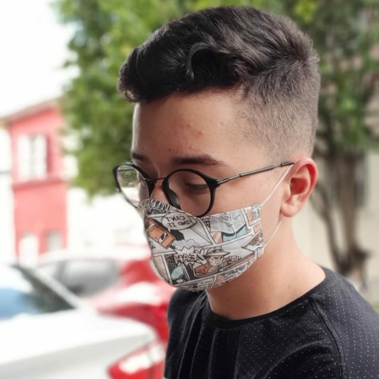
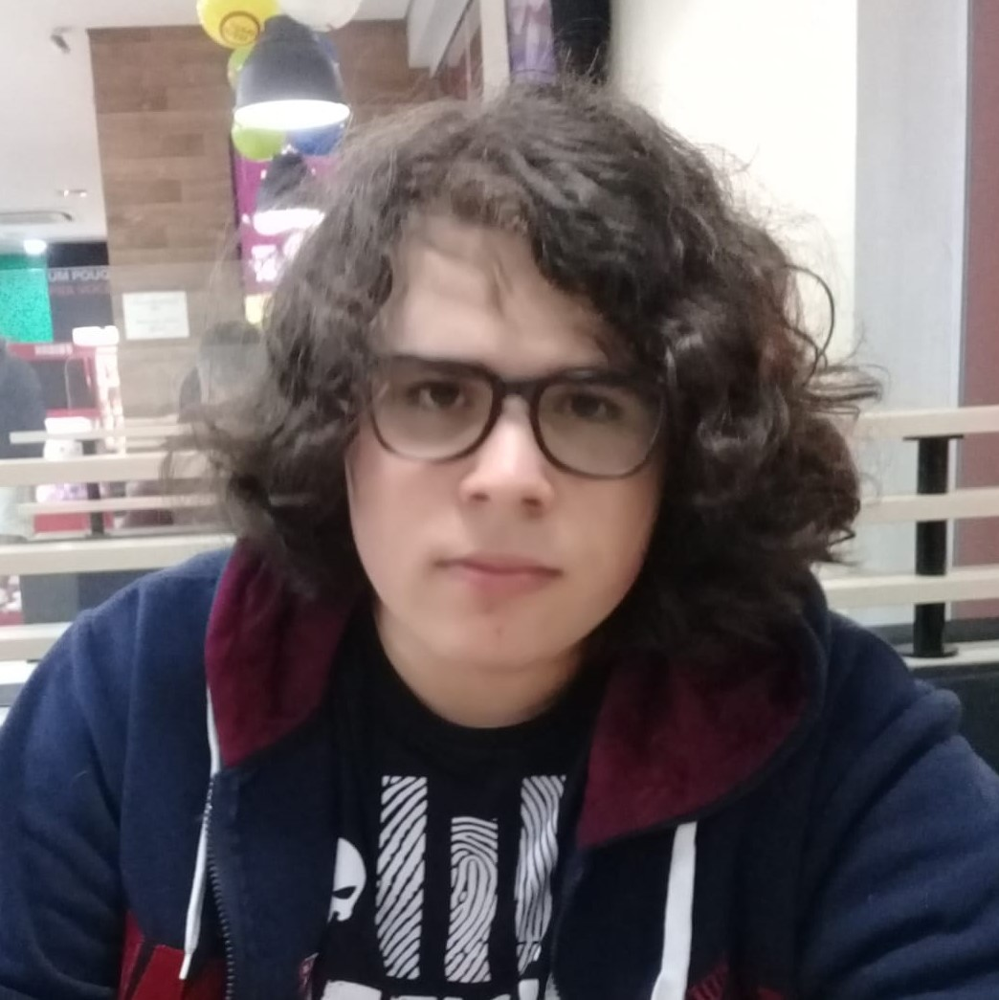

Asafe Gois
Responsável pela criação e desenvolvimento de Front-End e design gráficos, ultilizando dos recursos como html, css e photoshop para a criação e manipulção de fotos e design clean. Mediador da busca e divulgação dos perfis de teste para o site.

Marco Santhiago
Responsável pela idealização, em grande parte, do projeto e design da logo. Lidou com as midias sociais, criando e administrando as redes socias do site. Também mediador da busca e divulgação dos perfis de teste para o site.